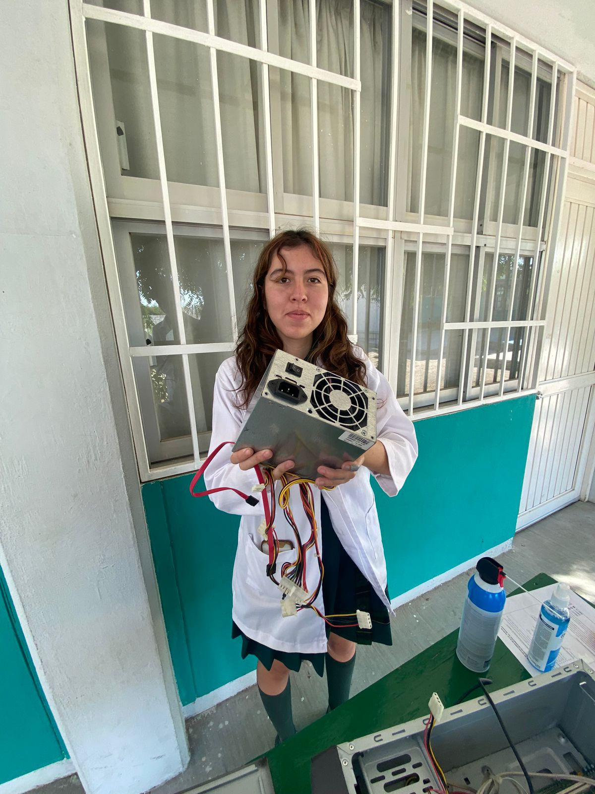

Tercer Semestre
Fundamentos del sistema y mantenimiento

Sistemas Operativos
Sistemas Operativos
Gestión del hardware y software, administración de archivos y configuración del entorno Windows.
Funciones principales (hardware y software)
Uso de Windows
Instalación de sistemas operativos
Administración de archivos y carpetas
Configuración básica del sistema
Uso de herramientas del sistema

Mantenimiento
Mantenimiento del Equipo de Cómputo
Identificación, limpieza, ensamble y diagnóstico de fallas en equipos de cómputo.
Identificación de componentes
Limpieza preventiva del equipo
Tipos de mantenimiento (preventivo y correctivo)
Ensamble y desensamble de computadoras
Diagnóstico de fallas comunes
Uso adecuado del equipo